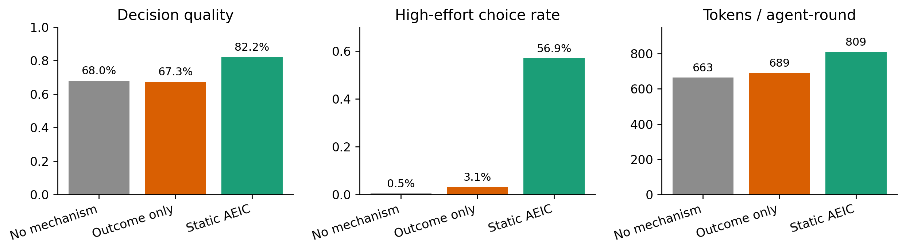
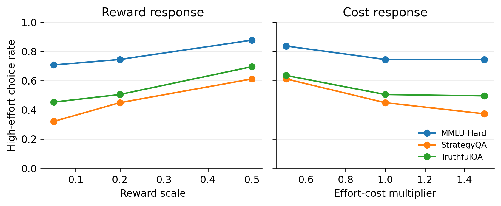
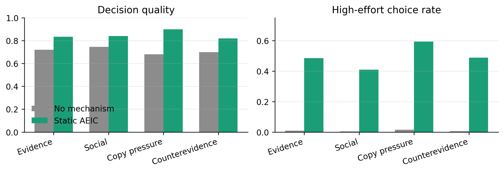
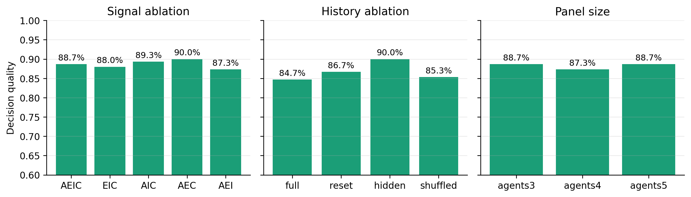
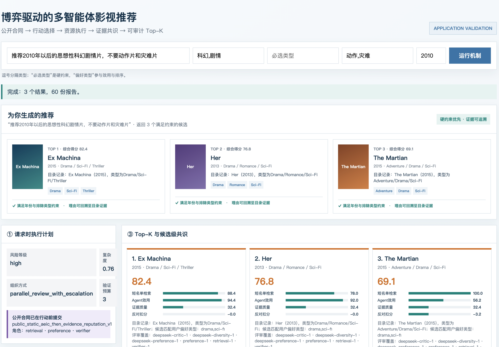
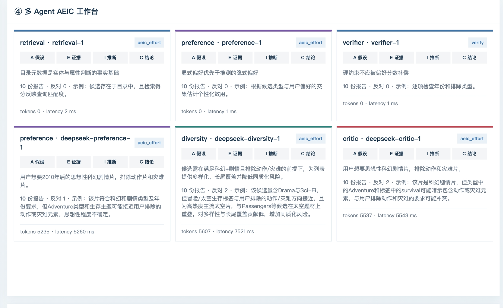
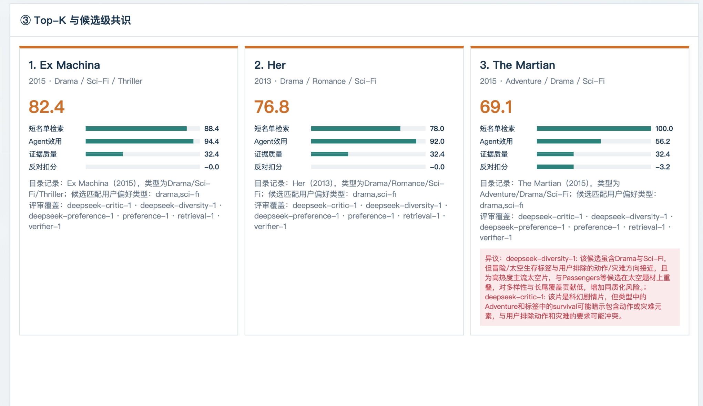
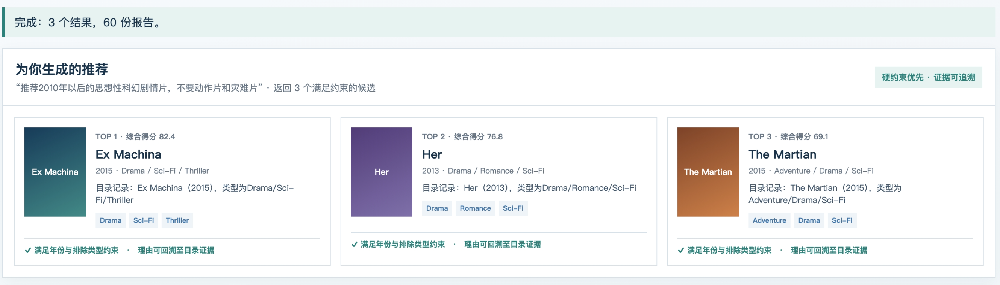
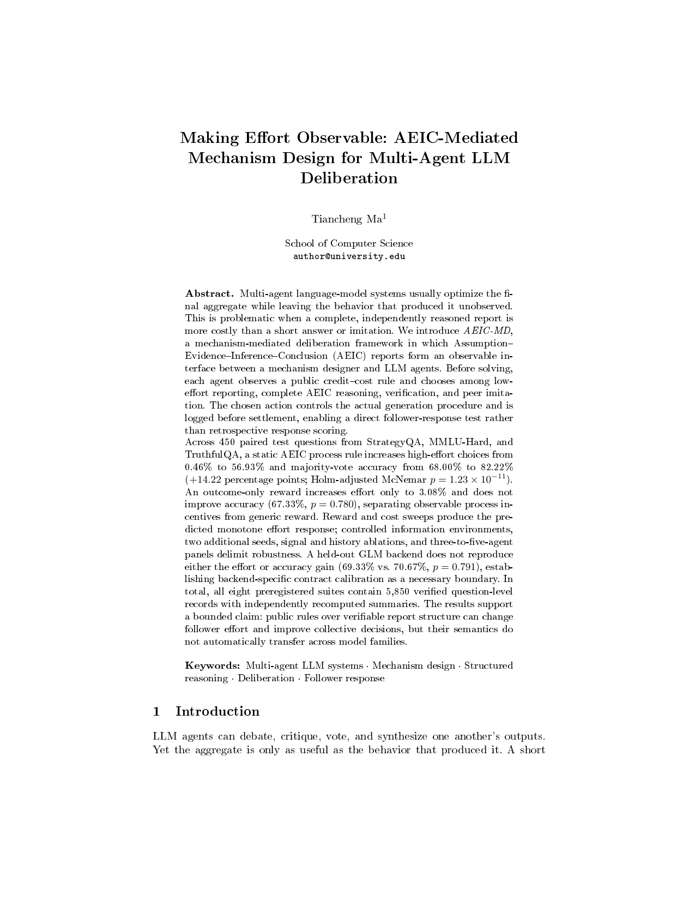

•••
•••
•••
毕业论文 · 中期汇报
博弈驱动的去中心化
语义共识机制
及在影视推荐中的应用
机制设计→实验验证→系统落地
让 Agent 在公开规则下选择行动，让共识建立在可验证报告之上。
汇报人：马天成 · 导师：高志鹏 · 中期汇报 · 2026
汇报内容
围绕一个核心创新点展开：从问题定义出发，依次说明机制、实验、系统与阶段成果
01研究背景与问题定义
多智能体协作中的行动不可见、低成本模仿与验证成本问题
核心创新点
AEIC 介导的博弈驱动审议机制：把报告、行动与资源路径纳入公开合同
机制设计与形式化
Leader–Follower 时序、效用、信誉、验证与集体决策
实验设计与结果
三域主实验、行为响应、信息环境、组件扰动与稳健性
系统设计与应用验证
影视搜推中的规划、检索、多角色审议、共识与审计闭环
阶段成果与后续安排
论文、系统、知识产权、当前完成度及毕业设计收尾计划
研究主线：公开规则 → Agent 行动选择 → AEIC 报告 → 验证与集体决策 → 影视系统验证。开题报告仅用于说明问题来源，目录与结论均以当前完成工作为准。
从模型能力提升走向可信多智能体协作
研究背景来自多智能体协作、语义一致性、推理验证与博弈激励四条研究脉络，本文进一步关注有限预算下的机制控制
RESEARCH CONTEXT · CAPABILITY能力增强与协作演进
- LLM 多智能体从简单角色分工发展到辩论、同侪评审、异构 Agent 和多种通信结构。
- CoT、Graph-of-Thought 与推理对齐增强了复杂任务能力，但过程仍可能出现幻觉、从众与不可验证推理。
- 更强基模提高能力上限，却通常伴随更高 Token、延迟、算力和服务依赖。
- 模型能力提升不能自动决定何时需要深推理、外部验证或快速结束。
互补
而非替代
RESEARCH GAP · CONSENSUS语义共识与机制约束
- 现有语义一致性和幻觉治理多关注单模型输出，多 Agent 如何在自然语言语义空间形成可计算共识仍不充分。
- 推理验证能够约束事实和逻辑错误，但全面验证带来显著资源成本。
- 博弈、信誉和验证反馈为诱导高质量协作提供基础，但需要转化为 LLM 可执行、可记录的协议。
- 本文不改变基模参数，而是通过公开合同控制行动、资源路径与信息生产。
本文研究问题
如何构建博弈驱动的去中心化语义共识机制，使 Agent 在局部信息和有限预算下选择可验证行动，并形成可靠、可审计的集体结论？
应用动机
影视推荐同时包含偏好、硬约束、事实证据和低时延需求；端侧与 Jev 类快速结构化决策趋势进一步凸显机制路由价值。
注：Jev 仅作为低时延结构化决策趋势示例，本文未将其作为实验基线；当前结论来自 DeepSeek / GLM 配置。
研究内容：博弈驱动的去中心化语义共识机制
AEIC机制 统一机制设计、系统实验与影视推荐应用验证，整项工作只有一个核心创新点
| 方法族 | 结构化中间过程 | 规则在生成前公开 | Agent 主动选择行动 | 行动控制真实资源路径 | 可识别 follower response |
|---|
| 多数投票 / Self-consistency | — | — | — | — | — |
| CoT / ReAct / 结构化 Prompt | ✓ | — | 部分 | 部分 | — |
| Outcome-only 奖励 / 事后评分 | — | 可有 | — | — | 结果响应 |
| 拓扑 / 路由 / Debate | 可有 | 信息规则 | — | 系统调度 | — |
| 本文 AEIC机制 | ✓ AEIC | ✓ 合同承诺 | ✓ 四类行动 | ✓ Prompt/Token/验证 | ✓ 配对实验 |
研究内容 1 · 去中心化机制构造 AEIC 报告空间、公开合同、局部行动、验证结算与博弈共识闭环。
研究内容 2 · 实验验证通过三域配对实验、奖励成本扫描、信息环境、组件扰动和稳健性实验识别 follower response。
研究内容 3 · 影视推荐应用在影视推荐系统中验证规划、检索、审议、共识、解释和 Trace 的完整链路。
逻辑去中心化的 AEIC机制 总体框架
各 Agent 基于局部状态独立选择行动和生成报告，再通过受控信息交换形成可审计共识
去中心化口径：决策与报告逻辑由 Agent 基于局部信息独立完成；实验程序仅负责同步、规则执行和日志复现。当前实现属于模拟去中心化，不等同于跨节点 P2P 基础设施。
AEIC 将自然语言过程转换为机制可用信号
每个字段既承担语义记录功能，也对应可计算指标、验证入口和后续结算用途
| 字段 | 记录内容 | 当前实现提取 | 机制用途 |
|---|
| AAssumption | 任务解释、前提与约束 | field_A 是否存在；保留原文轨迹 | 审计 Agent 采用了怎样的问题定义 |
| EEvidence | 事实主张与来源 | field_E、Token 新颖度、复制度、验证状态 | 识别新增贡献、模仿风险并触发核验 |
| IInference | 证据到结论的推理连接 | field_I 是否存在；保留推理原文 | 为复核与异议比较提供可见过程 |
| CConclusion | 最终立场或可执行决策 | field_C、可解析立场、立场变化 | 进入集体决策并记录纠正或无支持翻转 |
为什么不能只保留 Conclusion
相同结论可能来自独立证据，也可能来自复制同伴。AEIC 让系统观察“信息如何被生产”，从而把过程质量纳入合同结算。
生成前：合同规定报告要求和行动成本
生成中：行动决定 Prompt、Token 与验证路径
生成后：解析 AEIC，计算信号并更新信誉
共识时：汇总结论，同时保留证据和异议
{"A":"任务前提", "E":[{"claim":"...","source":"..."}], "I":"证据如何支持判断", "C":"最终立场"}可观测信号如何进入机制结算
代码从结构、结论、证据增量和纠错行为提取信号；不同合同选择其中一组进行信用结算
信号进入三个环节
- 信用结算：固定过程合同侧重完整度与结论一致性。
- 边际贡献：自适应合同进一步奖励新证据、已验证证据和有效纠正。
- 审计输出：同步保留字段得分、复制风险、异议与资源消耗。
实现边界
- 任务真值只在需要结果验证的结算阶段使用，不提前暴露给 Agent。
- 证据新颖度基于可见证据的 Token 增量，不宣称完整语义事实核验。
- 这些信号控制激励与审计，最终效果仍由任务准确率独立评估。
公开合同与行动选择
规则在生成前公开；Low、AEIC、Verify、Imitate 四种行动触发不同提示、Token 与验证过程
合同如何驱动真实资源路径选择
Leader 公布信用、成本、信息和预算；Follower 的行动对应不同 Prompt、Token、调用和验证过程
公开合同
m=(gm,cm,Pm,Bm)
信用规则、行动成本、信息可见策略与验证预算在生成前公开。
Follower 决策
ai*∈argmaxa∈𝒜 𝔼[gm(ri,y,hi)|a,m,hi]−cm(a)
模型无需显式求解析最优解；本文检验合同变化后的可观察行动响应。
状态更新
ρit=δρit−1+gm(rit)−cm(ait)
本轮贡献和成本进入信誉状态，影响后续可见历史与协作。
| 行动 | 执行路径 | Token / 调用 | 新增信息 | 作用 |
|---|
| Low | 短提示、直接结论 | 低 / 1 次 | 少 | 低风险快速判断 |
| AEIC | 完整四字段报告 | 中 / 1 次 | 假设、证据、推理 | 可审计独立分析 |
| Verify | AEIC + 核验与修订 | 高 / 2–3 次 | 外部支持或反证 | 高风险事实核查 |
| Imitate | 读取同伴后综合 | 中 / 1 次 | 低独立性 | 利用群体信息 |
奖励预测提高完整报告与验证信用 → 高资源行动率上升成本预测提高 AEIC / Verify 成本 → 高资源行动率下降信息预测开放同伴信息 → 模仿与独立贡献结构变化 博弈如何形成可审计共识
共识不是孤立的投票步骤，而是“规则改变行动—行动改变信息供给—信息进入集体决策”的完整过程
STEP 01 · COMMITLeader 公开合同
在生成前公布信用规则、行动成本、信息可见性和验证预算。
m=(gₘ,cₘ,Pₘ,Bₘ)→
STEP 02 · RESPONDFollower 选择行动
Agent 根据期望信用与可见成本，在四条真实资源路径中作出选择。
aᵢ∈{Low, AEIC, Verify, Imitate}→
STEP 03 · REPORT生成 AEIC 报告
行动决定提示、Token 和验证过程；报告暴露假设、证据、推理与结论。
rᵢ=(Aᵢ,Eᵢ,Iᵢ,Cᵢ)→
STEP 04 · SETTLE验证并结算信誉
根据报告贡献、结果和成本更新状态，使下一轮能够看到历史反馈。
ρᵢᵗ=δρᵢᵗ⁻¹+gₘ−cₘ→
STEP 05 · AGGREGATE形成集体结论
主实验汇总最终轮 Conclusion；共识结果与全过程记录共同进入审计。
ŷ=Majority({Cᵢᵀ})
博弈驱动发生在哪里m → π(a | x,m,h) → r → C
实验识别什么ΔH 与 ΔAcc：合同改变后的行动与集体结果差
关键边界：当前聚合器本身仍是多数表决；创新不在发明一种加权投票，而在共识形成之前，用公开合同改变可验证信息的生产过程。
实验要回答的三个问题
先验证公开规则是否改变行动，再判断行动变化是否改善集体决策，最后检验响应方向与适用边界
RQ1 · FOLLOWER RESPONSE公开规则能否改变 Agent 的行动选择？
比较 Low、AEIC、Verify、Imitate 的选择分布，核心指标为高资源行动率。
RQ2 · COLLECTIVE DECISION行动变化能否提高集体决策质量？
比较第三轮多数投票的正确率，并同时报告 Token 等资源代价。
RQ3 · ROBUSTNESS效应是否符合机制预期并保持稳定？
改变奖励、成本、信息环境、Seed 和 Panel 规模，检验响应方向与稳定性。
任务构成
数据集题数任务特征
StrategyQA150隐式多步常识推理
MMLU-Hard150高难度专业知识问答
TruthfulQA150误导性前提与真实性判断
主实验共 450 道测试题
行动选择与 AEIC：deepseek-chat；验证：deepseek-reasoner；低努力：glm-4-flash。
主实验采用问题级配对设计
同一道题保持模型、Seed、Agent 数、轮次、信息策略和聚合方式一致，只改变生成前公开的规则
一个配对实验单位
- 同一道测试问题
- 同一模型后端与随机设置
- 5 个 Agent
- 3 轮同步审议
- 独立信息环境
- 第三轮结论多数投票
唯一处理变量：Agent 在行动前看到的公开规则
C0 · BASELINENo Mechanism
不提供显式信用规则；Agent 只看到各行动的成本。
C1 · CONTROLOutcome Only
只奖励最终答案正确，不奖励报告过程或 AEIC 结构。
C2 · TREATMENTStatic AEIC
奖励 AEIC 完整性和明确结论，不在生成时查看答案标签。
450 题 × 3 条件 = 1,350 个问题—条件记录 | 20,250 个 Agent-Round
行为、决策与资源三类指标
行为指标回答 Agent 是否响应规则，决策指标回答系统是否更准确，资源指标回答改善付出了什么代价
行为指标 · 高资源行动率
H(a)=1[a ∈ {AEIC, Verify}]即 AEIC 或 Verify 行动占全部 Agent-Round 的比例；衡量的是可观测资源路径，不是心理努力。
决策指标 · Question accuracy
Acc = mean( majority(Cᵢ³) = y )从第三轮显式 Conclusion 字段提取立场，在问题级计算多数投票正确率。
资源指标 · Cost
tokens / agent-round同时记录调用次数、Token 和延迟，避免把额外计算带来的提升解释为零成本收益。
统计分析方案
问题级配对相同问题在三种条件下逐题比较，减少题目难度差异造成的噪声。
Exact McNemar test对最终正确/错误的配对变化进行精确检验，并报告 corrected 与 harmed 数量。
Holm correction在预先设定的比较族内校正多重检验，主结果报告校正后的 p 值。
分域与稳健性分析分别报告三个任务域，并通过额外 Seed、Panel 规模和模型后端检查边界。
四类扩展实验解释机制并检验稳定性
扩展实验不重复主效应，而是分别回答行动响应、信息影响、结果稳定性和组件鲁棒性
01 · MECHANISM RESPONSE奖励—成本扫描
操纵：奖励 0.05 / 0.2 / 0.5；成本倍率 0.5 / 1.0 / 1.5。
回答：高资源行动选择是否随奖励上升、随成本下降。
02 · INFORMATION受控信息环境
操纵：新增证据、仅多数立场、复制压力、立场相反证据。
回答：规则在不同同伴信息条件下是否仍然影响行动。
03 · ROBUSTNESSSeed 与 Panel 规模
操纵：两个额外 Seed；3 / 4 / 5 个 Agent。
回答：结果是否依赖单次采样或固定群体规模。
04 · COMPONENT STABILITY字段与历史策略扰动
操纵：调整 AEIC 字段组合和历史信息策略。
回答：机制性能能否在局部配置变化下保持稳定。
Static AEIC 改变行动并提高准确率
高资源行动率 0.46%→56.93%，多数投票准确率 68.00%→82.22%；Outcome-only 无显著提升

行动响应
0.46% → 56.93%No Mechanism 到 Static AEIC，高资源行动提升 56.47pp。
决策质量
68.00% → 82.22%提升 14.22pp；Holm 校正 McNemar p=1.23×10⁻¹¹。
Outcome-only 控制
67.33%没有显著改善，p=0.780；效果不能归结为一般奖励语言。
三个任务域均提升，但增益并不相同
Static AEIC 在 MMLU-Hard 和 TruthfulQA 上提升最明显；StrategyQA 的基线较高、增益较小
| 数据集 | No Mechanism | Outcome Only | Static AEIC | 准确率增益 | AEIC/Verify 占比增益 |
|---|
| StrategyQA | 73.33% | 76.00% | 77.33% | +4.00pp | +43.51pp |
| MMLU-Hard | 71.33% | 63.33% | 91.33% | +20.00pp | +73.69pp |
| TruthfulQA | 59.33% | 62.67% | 78.00% | +18.67pp | +52.22pp |
+4.00ppStrategyQA：提升存在，但明显小于另外两个任务域+20.00ppMMLU-Hard：知识推理任务获得最大准确率增益+18.67ppTruthfulQA：对误导性前提的判断显著改善
不同任务结构决定了高资源行动的边际价值
准确率增益与高资源行动响应同向变化，但三类任务的错误来源、基线空间和可验证性并不相同
COMMONSENSE BOOLEANStrategyQA
+43.51pp高资源行动响应15.0%相对错误减少
- 布尔型常识推理，基线已达 73.33%，剩余改进空间较小。
- 高资源行动增长也是三域最低，额外报告与验证较少转化为答案翻转。
- 解释：结构化过程仍有帮助，但简单结论格式限制了边际收益。
HARD KNOWLEDGE MCQMMLU-Hard
+73.69pp高资源行动响应69.8%相对错误减少
- 困难知识选择题需要事实提取、选项比较和排除干扰项。
- 高资源行动响应最大，同时准确率提升 20pp，二者在方向上吻合。
- 解释：完整 AEIC、追加验证与更多计算资源在此类任务上价值最高。
MISCONCEPTION RESISTANCETruthfulQA
+52.22pp高资源行动响应45.9%相对错误减少
- 基线仅 59.33%，问题常包含诱导性前提或常见错误信念。
- 显式写出假设、证据和反证，更容易暴露“听起来合理”的错误。
- 解释：结构化核查主要改善真实性判断，而不仅是增加文本长度。
证据边界：以上解释与任务结构和行为数据一致，但不是独立的因果分解。每域 n=150，尚未进行预注册的数据集×处理交互检验；差异也可能受到题目难度构成、模型先验和输出格式影响。
Agent 对奖励和成本产生方向性响应
奖励从 0.05 增至 0.5 时高资源行动率 49.42%→72.84%；成本升高时则降至 53.78%

奖励响应
49.42% → 72.84%奖励由 0.05 提升至 0.5，三域高资源行动率均单调上升。
成本响应
69.51% → 53.78%成本倍率由 0.5 提升至 1.5，三域高资源行动率均不增加。
解释范围
该实验支持方向性行为响应，不作为第二个主效应估计。
四种信息环境下的行动与准确率
Static AEIC 在证据、社会信息、复制压力和反证条件下都提高高资源行动率，并在本组实验中提高准确率

Evidence
72.0% → 83.3%高资源行动率 0.93% → 48.58%。
Social / Copy
74.7%→84.0% / 68.0%→90.0%复制压力下高资源行动率达到 59.33%。
Counterevidence
70.0% → 82.0%高资源行动率 0.58% → 48.84%。
额外 Seed 与不同 Panel 规模下结果保持稳定
两个额外 Seed 复现主方向；3、4、5 个 Agent 条件下 Static AEIC 准确率均保持在 87% 以上
| 稳健性条件 | No Mechanism | Static AEIC | 差值 |
|---|
| 额外 Seed（汇总） | 71.00% | 85.67% | +14.67pp |
| 3 Agents | — | 88.67% | 稳定 |
| 4 Agents | — | 87.33% | 稳定 |
| 5 Agents | — | 88.67% | 稳定 |
额外 Seed
p=2.40×10⁻⁹Holm 校正后的配对检验仍显著，主结果方向得到复现。
Panel 规模
87.33%–88.67%Agent 数从 3 增至 5 时没有观察到明显质量退化。
组件与历史扰动下机制性能保持稳定
不同 AEIC 字段组合与历史策略下准确率维持在 84.67%–90.00%，说明整体机制对局部配置变化具有鲁棒性

字段组合稳定性
87.33%–90.00%AEIC、EIC、AIC、AEC、AEI 配置均维持较高准确率。
历史策略稳定性
84.67%–90.00%full、reset、hidden、shuffled 条件下整体性能保持稳定。
结果含义
完整 AEIC 提供统一、可审计的默认接口；局部字段或历史策略调整没有破坏机制整体效果。
主效应、行为响应与稳健性形成完整证据链
不是依赖单一准确率数字，而是依次验证“合同改变行动—行动改善结果—效应保持稳定”
| 证据层次 | 关键结果 | 回答的问题 |
|---|
| 确认性主实验 | 行动 +56.47pp；准确率 +14.22pp | 合同是否同时改变行为与结果 |
| 奖励—成本扫描 | 奖励上升、成本上升呈相反方向响应 | 行动变化是否符合机制预测 |
| 受控信息环境 | 四类信息条件下主方向一致 | 机制是否依赖单一信息结构 |
| Seed 与 Panel 规模 | 额外 Seed +14.67pp；3–5 Agent 稳定 | 结果是否依赖单次采样或固定规模 |
证据逻辑
规则 → 行动 → 结果先观察 follower response，再观察集体准确率，最后通过扩展实验检查解释与稳定性。
结论强度
多层相互印证主效应、方向性响应、信息环境和重复实验共同支持机制有效性。
主体结论：AEIC 公开过程规则能够系统性改变 Agent 的资源行动，并在测试任务上稳定改善集体决策。
实验结果支持四项核心结论
从确认性主实验扩展到行为机制、信息条件和重复实验，形成一致的结果链条
FINDING 01 · MAIN EFFECT过程规则改变行动与结果
证据：高资源行动率提升 56.47pp，准确率提升 14.22pp。
结论：Static AEIC 产生显著 follower response。
FINDING 02 · MECHANISMAgent 对奖励与成本有方向性响应
证据：三域奖励曲线单调上升，成本曲线单调下降。
结论：行动变化与公开合同的激励方向一致。
FINDING 03 · INFORMATION不同信息条件下主方向一致
证据：证据、社会信息、复制压力和反证条件下均观察到提升。
结论：机制不依赖单一同伴信息结构。
FINDING 04 · ROBUSTNESS结果跨任务、Seed 与规模保持稳定
证据：三个任务域均提升；额外 Seed +14.67pp；3–5 Agent 保持稳定。
结论：主方向不依赖单一任务或单次采样。
论文式总结：公开的 AEIC 过程规则能够诱导可观察的高资源行动，并通过更充分的信息生产改善集体决策。
影视搜索推荐系统
基于 18,430 部 MovieLens 电影，贯通请求规划、候选检索、三类 Agent、AEIC 共识和结果解释
请求先形成计划，合同先于 Agent 行动公开
同一次真实运行：高风险请求 → parallel review → 验证预算 3 → public contract committed

可验证结论
风险等级、复杂度、拓扑和验证预算均由请求时信息生成；时间线中 contract_committed 早于全部 agent_completed 事件。
三类 Agent 独立生成 AEIC 报告并产生真实分歧
Preference / Diversity / Critic 采用不同角色目标，行动、报告、Token 与延迟均进入 Trace

可验证结论
在线角色分别消耗 5234 / 5530 / 5723 tokens、延迟约 5–7 秒；Diversity 与 Critic 各产生 2 份反对报告，说明共识并非一致性模板输出。
Top-K 排序保留相关性、共识与证据分解
最终结果不是单一总分：每个候选都能追溯检索信号、决策共识、证据共识与报告层异议

可验证结论
Top-3 对每部影片分别展示检索相关、决策共识和证据共识，并保留已接受证据；另存JSON Trace用于复核同配置运行。
从机制审议回到用户可读的最终推荐
同一批共识结果被整理为 Top-3 推荐卡：保留推荐理由、类型信息、约束满足状态和证据追溯入口

系统闭环
用户不需要阅读内部 Trace；系统将多 Agent 审议结果转化为可理解的推荐，同时保留“硬约束优先、理由可追溯”的可信提示。
已完成工作与未来计划
研究主体已经完成；未来工作沿博弈求解、个性化应用评测和成果交付三条任务收口
已经完成的主体
方法设计AEIC、公开合同、行动空间、信誉与共识闭环主实验三种规则、三个数据集和 450 个配对问题扩展实验机制响应、信息环境、组件扰动与稳健性验证统计分析配对检验、Holm 校正、领域分析与敏感性分析系统原型影视目录检索、多角色审议、共识与运行记录运行证据主案例整页截图、四张裁切图与同配置Trace已固化论文成果论文已撰写完毕，正在投递系统测试核心逻辑与 HTTP 接口测试通过
未来计划
- 机制求解：估计 follower 响应面，定义 Leader 效用并搜索有限合同空间。
- 个性化应用：增强短期偏好、长期画像与混合召回，完成影视应用评测。
- 论文与成果：整合毕业论文，推进论文投递、专利申请与系统验收。
- 答辩交付：根据反馈完善系统、演示脚本和评审问答。
阶段成果与后续时间安排
研究主体已经完成，后续按照“应用评测—论文定稿—答辩交付”三个层次完成收口

PAPER · SUBMITTING论文已撰写完毕，正在投递
论文的方法、实验、统计结果与结论已经统一，当前进入投稿与反馈修改阶段。
理论与实验AEIC 机制、三域主实验、扩展实验与统计检验完成系统原型MovieLens 目录、多 Agent 审议、共识与 Trace 主链路可运行论文成果论文已撰写完毕，正在投递知识产权系统专利文本已完成，后续按学校流程提交申请
拟定时间安排
研究主体完成完成机制设计、确认性与扩展实验、英文论文以及系统纵向主链路。
机制求解与个性化应用评测完成经验 Stackelberg 合同搜索；增强短期偏好、长期画像与混合召回，并完成应用评测。
成果投递与毕业论文整合推进论文投稿和专利申请，将理论、实验与系统应用统一进毕业论文。
反馈修改与系统完善根据反馈补充必要分析，完善系统交互、稳定性和代表性演示案例。
最终交付完成论文定稿、系统验收、演示脚本、问答材料与答辩版本归档。
工作原则：不再新增研究方向；每项后续任务都对应明确交付物，并直接服务于结论可信度或毕业答辩。
谢谢 · Q & A